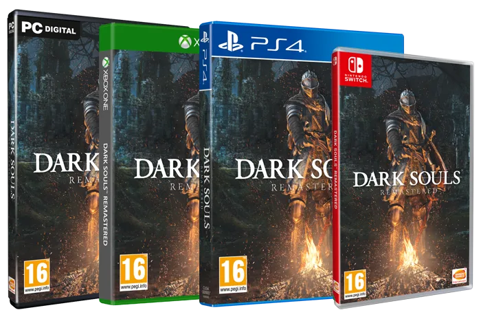

Dark Souls
Data de lançamento: 25/05/2018
Geneto: RPG
Desenvolvedor: FromSoftware, Inc
Então, Houve fogo.
Re-experimente o aclamado pela crítica, jogo definidor de gênero que começou tudo.
Lindamente remasterizado, retorne a Lordran com detalhes impressionantes.
Dark Souls Remastered inclui o jogo principal mais o Artorias of the Abyss DLC.
 COMPRE AGORA
Video
DARK_SOULS_REMASTERED
COMPRE AGORA
Video
DARK_SOULS_REMASTERED
Características principais
- Universo profundo e escuro
- Cada Fim é um Novo Começo
- Riqueza e possibilidades de jogabilidade
- Sentido de Aprendizagem, Domínio e Realização
- The Way of the Multiplayer (até 6 jogadores com servidores dedicados)
Escolha a plataforma

Notícias